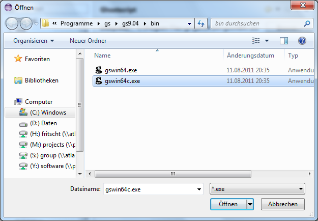

Window >
Preferences...
to open the workbench preferences.
Postscript >
Ghostscript
preference page to display the configured Ghostscript interpreter.
You will see that it is not configured yet.
Window >
Preferences...
to open the workbench preferences.
Postscript >
Ghostscript
preference page to display the configured Ghostscript interpreter.
You will see that it is not configured yet.

- For Windows:
-
Navigate to the Ghostscript installation directory. Select the
executable (it is called "gswin32c.exe" or "gswin64c.exe").

- For Linux or Unix:
- Select "/usr/bin/gs".